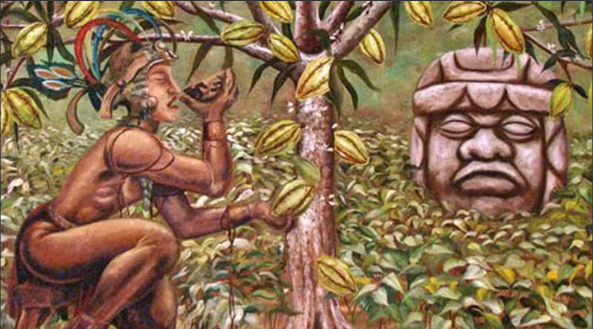
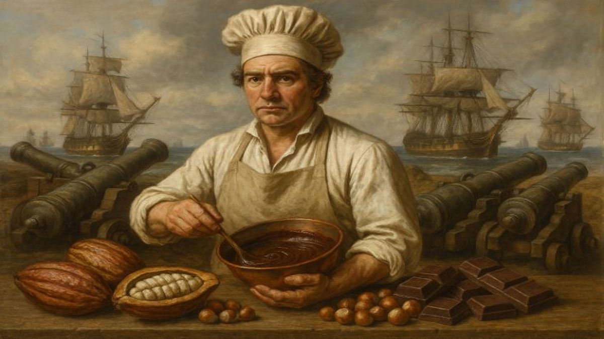
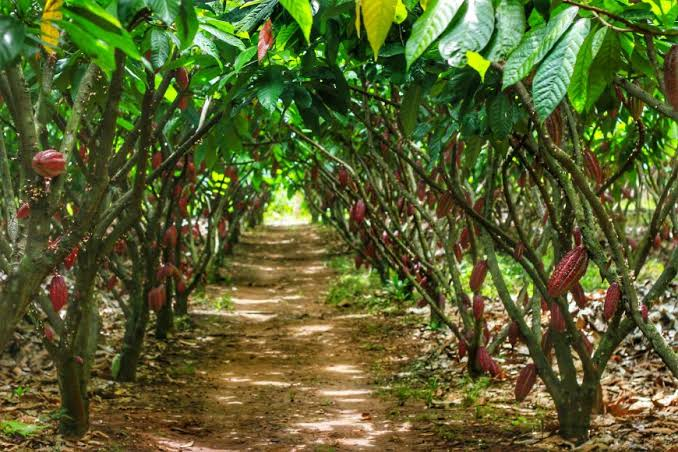
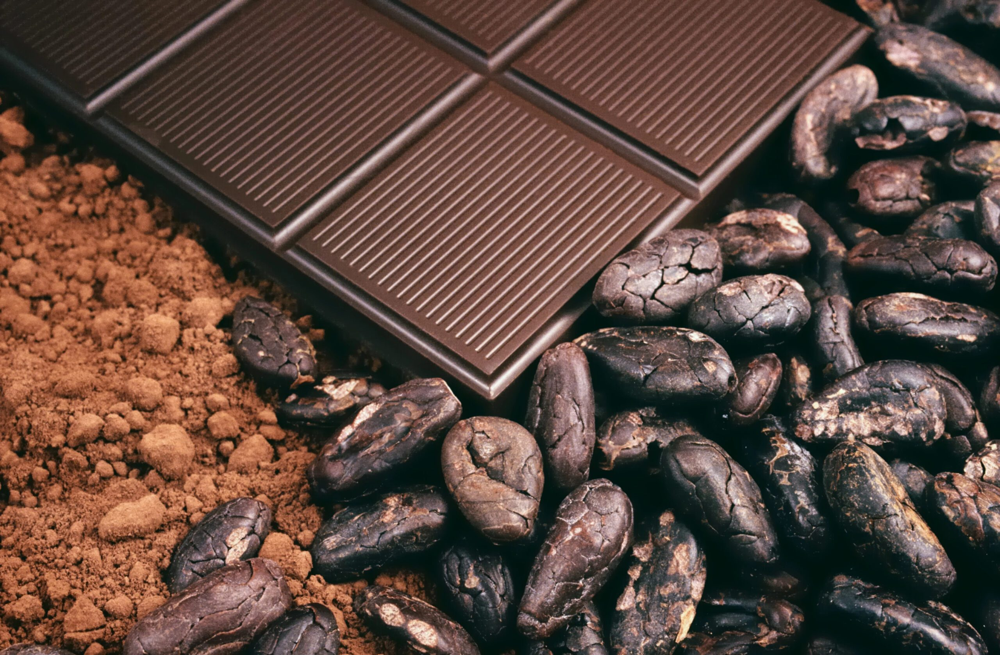
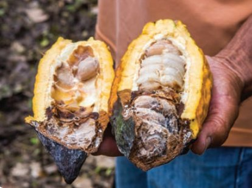
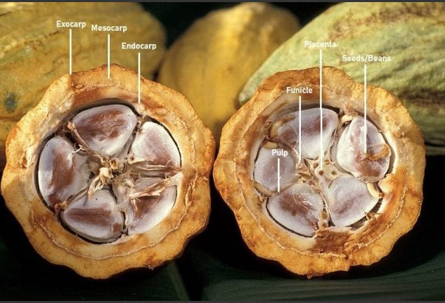

Estudos arqueológicos apontam que o cultivo começou na região amazônica.
Povos como os Olmecas, Mayas e Astecas adotaram a planta, preparando uma bebida amarga, espumante e apimentada (xocolātl).
As sementes eram tão valiosas que funcionavam como moeda de troca.

Com a conquista espanhola das Américas, Hernán Cortés levou as sementes para a Espanha em 1528.
Os europeus adicionaram açúcar e canela à bebida, transformando-a em uma iguaria luxuosa exclusiva da nobreza e do clero.

O cultivo do cacaueiro se espalhou pelas colônias tropicais.
No Brasil, o cacau encontrou no solo do sul da Bahia (região de Ilhéus e Itabuna) o clima ideal,
tornando o país um dos maiores produtores mundiais na era dos "Barões do Cacau".

Em 1828, Coenraad van Houten inventou a prensa hidráulica para separar a manteiga de cacau, criando o cacau em pó.
Décadas depois, na Suíça, Daniel Peter e Henri Nestlé misturaram leite em pó à massa, criando o primeiro chocolate ao leite sólido.

A praga fúngica "vassoura-de-bruxa" devastou a produção baiana nos anos 1990.
Hoje, o mercado se reorganizou com foco na sustentabilidade, sistemas agroflorestais (como o cultivo "cabruca")
e a valorização de chocolates finos e artesanais (bean-to-bar).


A botânica e a história do cacau reservam detalhes fascinantes que nem sempre chegam até a embalagem do chocolate no supermercado.
O próprio visual do cacaueiro impressiona pela singularidade. Trata-se de uma planta cauliflora, o que significa que suas delicadas flores
e pesados frutos nascem colados diretamente no tronco e nos galhos mais grossos, em vez de surgirem nas pontas dos ramos.
Além disso, diferente de outras árvores frutíferas que dependem de abelhas para a polinização, o cacaueiro é fertilizado por minúsculos mosquitos do gênero Forcipomyia.
Esse processo exige uma precisão enorme da natureza: de milhares de flores que desabrocham em uma única árvore por ano, apenas cerca de 2% chegam a se transformar em frutos.
Para produzir apenas um quilo de chocolate puro, a indústria precisa de aproximadamente 400 a 500 dessas amêndoas.